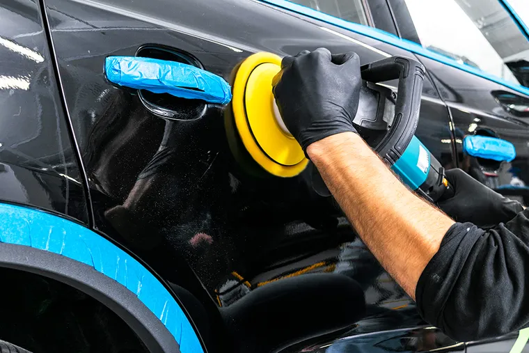
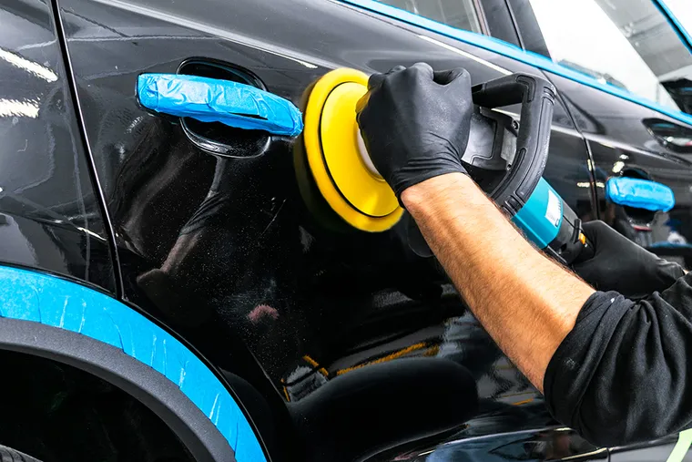

Правильно помыть автомобиль – дело не простое! Агрессивная щелочная химия, грязные тряпки и непонимание сути процесса – все это быстро наносит ущерб ЛКП, резиновым и пластиковым элементам кузова. Как итог кузов весь в риске от микроцарапин, резиновые и пластиковые элементы выглядят тускло и имеют белесый налет. А следы от битума, смолы и тополиных почек, а так же вкрапления металла от тормозных колодок – убрать с кузова авто при обычной мойке вообще невозможно.
В процессе работ мы применяем только качественную автохимию, профессиональные крупнопористые губки, специальные кисти и качественные микрофибровые полотенца. Это позволяет нам эффективно удалить всю грязь и высушить кузов без царапин и вреда для ЛКП.
Detailing мойка
Что такое детейлинг?
Детейлинг (от английского detailing – детальный) – это наиболее тщательная комплексная процедура ухода за автомобилем. Цель детейлинга – вернуть автомобилю «былой лоск». Иными словами, восстановить внешний вид и салон машины, которые пострадали в процессе эксплуатации.
Предварительная мойка первичным составом Koch Chemie Multi Star. Антибитумная очистка кузова и колесных дисков. Удаление колодочной пыли с кузова и колесных дисков. Очистка кузова и стекол синтетической глиной. Очистка системы выхлопа и т.д.
Предварительная мойка первичным составом Koch Chemie Multi Star. Контактная мойка для удаления неорганических загрязнений и нейтрализации действия щелочных составов рН-нейтральным шампунем Koch Chemie Acid Shampoo SiO2 с помощью профессиональных крупнопористых губок Koch Chemie Waschschwamm. Очистка колес и ковриков салона. Нанесение консерванта Koch Chemie Nanocrystal Polish (летний период) или Koch Chemie Protector Wax (зимний период). Продувка зеркал, дверных ручек. Протирка автомобиля.
Трехфазная мойка Protector Car Wash. Уборка салона и багажного отделения пылесосом. Влажная очистка пластика Koch Chemie Mehrzweckreiniger/Pol Star. Очистка педального узла. Чернение и консервация шин и наружного пластика Koch Chemie Gummi Kunststoff.
Услуги по уходу за экстерьером
- Очистка дисков и выхлопа = 300 ₽(Koch Chemie Felgenblitz)
- Удаление насекомых, дорожной разметки = 150 ₽
(Koch Chemie Insect&Dirt Remover / Orange Power)
- Антибитумная обработка кузова = 250 ₽
(Koch Chemie Teerwasche)
- Очистка ЛКП от металлических вкраплений = 500 ₽
(Koch Chemie Felgenblitz)
- Чернение / консервация шин и наружного пластика = 100 ₽
(Gummi Kunststoff)
- Глубокая очистка ЛКП синтетической глиной = 900 ₽
 
